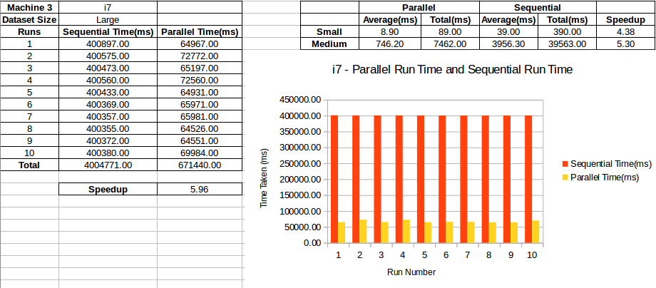

CSC2002S - Assignment 1 - Report
Name: Jethro Muller
Student Number: MLLJET001
Introduction
The project aimed to investigate the practical application of parallelism using the Java ForkJoinPool framework, and the speedups seen in the real world on different processors.
The code that was to be parallelized was for cross-correlating two datasets and finding the maximum value of the result. The datasets were meant to be approximations of the sort of data one would get if they were doing signal processing for a radar.
The maximum value of the cross-correlation is used to find the time difference between the signal being sent and receiving a response.
The tests run for this report were run on datasets that contained 10 thousand, 100 thousand, and 1 million data points.
The tests were run on 3 separate machines with different processors and architectures.
Methods
Approaching the Solution
I approached the solution by looking for a way to decompose each method to a single unit of work. Once I had identified this point, I was able to use a divide and conquer approach. This was put into the section that runs when the sequential threshold is reached.
Once that was done, I investigate the best method to collate the resulting data. I decided that the best way for the cross-correlation result array should not be remade in each thread as remaking it and then combining it later was costly. After doing some testing I found the best method to be using its mutability to pass the same array to all threads and have them fill in the same single array. The same thing was done with the two dataset arrays as the indices each thread was required to access were passed as a parameter to each new thread.
Both the sequential and parallel algorithms do 12 runs, 2 "warm-up" runs and 10 timed runs. I chose to do 2 warm-up runs because I noticed that the first two runs were always significantly slower than the rest and I didn't want this to skew my results.
During each run, the results(Maximum value in the cross-correlation array, index of said value and the run time) are printed to standard output and to a text file. At the end of the 10 runs, the total run time and average run time are displayed and written to the text file.
I validated my algorithm by comparing the results with the given results for the small dataset as well as conferring with my peers and discovering that I was indeed getting the correct result. During my discussions I was informed that an additional speedup could be achieved by adding a break.
for (int i = startIndex; i < endIndex; ++i) {
float sum = 0;
for (int j = 0; j < receivedArray.length; ++j) {
if (i + j < receivedArray.length) {
sum += receivedArray[i + j] * transmittedArray[j];
}
}
correlationArray[i] = sum;
}
vs
for (int i = startIndex; i < endIndex; ++i) {
float sum = 0;
for (int j = 0; j < receivedArray.length; ++j) {
if (i + j < receivedArray.length) {
sum += receivedArray[i + j] * transmittedArray[j];
} else {
break;
}
}
correlationArray[i] = sum;
}
The break works because once the if (i + j < receivedArray.length) statement evaluates to false, it won't be true again.
Problems Encountered
The biggest problem I encountered was the inexplicably slow times I was getting from the tests of my parallel implementation. The issue was caused by not using the given indices for each thread, instead running through the entire submitted and received datasets in each thread. Finding this error wasted an unnecessarily large amount of time, which is unfortunate.
ERRONEOUS CODE:
for (int i = startIndex; i < transmittedArray.length; ++i) {
float sum = 0;
for (int j = 0; j < receivedArray.length; ++j) {
if (i + j < receivedArray.length) {
sum += receivedArray[i + j] * transmittedArray[j];
}
}
correlationArray[i] = sum;
}
A problem occurred when I wanted to run my code on a the i7 but the resident operating system was Windows. I had to instruct the owner on how to get the JDK and then write .bat files that performed the same function as my make files on Unix.
Profiling
All the tests were run on the machines and the time taken to correlate the data points and find the maximum was recorded. This was done 10 times for both the sequential algorithm and the parallel algorithm and the results were printed to a text file.
The system load during the runs done on Nightmare and the Intel-i7 were unable to be controlled as I was not able to have sole access to either of them.
The timing was done using System.nanoTime() and then later converted to milliseconds.
Tested CPUs
Machine 1:
- CPU: Intel(R) Core(TM) i5-3210M CPU @ 2.50GHz
- Hyperthreading: Yes
- Physical Cores: 2
- Virtual Cores: 2
- Level 1 Cache: 128 KB
- Level 2 Cache: 512 KB
- Level 3 Cache: 3072 KB
Machine 2: (Nightmare)
- CPU: Intel(R) Xeon(R) CPU E5620 @ 2.40GHz
- Hyperthreading: Yes
- Physical Cores: 4
- Virtual Cores: 4
- Level 2 Cache: 1 MB
- Level 3 Cache: 12 MB
Machine 3:
- CPU: Intel(R) Core(TM) i7-2600k CPU @ 3.40GHz
- Hyperthreading: Yes
- Physical Cores: 4
- Virtual Cores: 4
- Level 2 Cache: 1 MB
- Level 3 Cache: 8 MB
Results and Discussion
Results



Discusion
Although not recorded, I did experiment with various sequential cutoff values before settling on my current value of 750. I found that if I used a value greater than or less than +-750 it took longer to execute. What I observed, as far as my understanding and testing goes was that the sequential_cutoff and time_taken when graphed would form a parabola of the form
y = a(x - 750)^2 + fastestTime where a > 0 and x >= 0
The turning point is at approximately 750 and the time_taken is increasing on either side of the turning point.
Conclusion
The i7 was by far the best performing processor. It demonstrated it's power by giving a 5.96 times speedup on the 1 million data point dataset. The speedup made me question it's authenticity, but sure enough, similar speed were experienced on the second run-through.
The processor powering machine 2 had a similar number of cores to that of machine 3 but the core clock was far lower. This probably contributed to the much slower speeds as the each thread eventually reaches a point when it has to run sequentially to do the correlation and this being faster would be an advantage. In this comparison it can be seen that the i7 outperforms the Xeon entirely.
The speeds were probably also hindered by other students using Nightmare.
My implementation allows for a fairly good usage of the additional physical and virtual cores, reaching a 3.02 times speedup on 2 physical cores and 2 virtual core and a 5.30 times speedup on 4 physical cores and 4 virtual cores, however, the speed increase as more cores are added is seen to have diminishing returns. The speedup per core decreases as the number of cores increases.
Overall, the parallelization definitely increased the performance of the algorithm while remaining accurate and having no race conditions. This, according to the ethos of parallelization is a success.